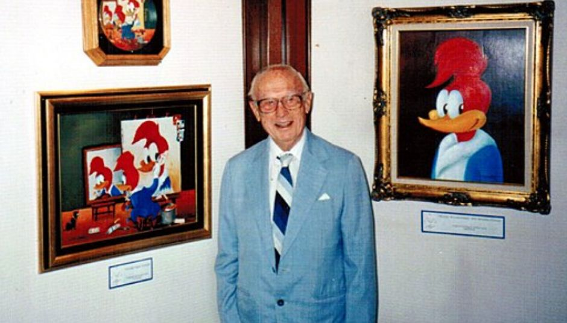

Conta-se que Walter Lantz, o criador do Pica-Pau, teve a ideia de fazer o desenho em sua lua-de-mel. Ele e a esposa estavam em uma cabana, quando ouviram um barulho muito irritante, como se alguém batesse a porta. Depois de alguns minutos, os dois perceberam que era um Pica-Pau bicando o teto de madeira da cabana. Lantz queria atirar no bicho, mas sua esposa sugeriu que ele fizesse um desenho animado sobre isso.
 Walter Lantz 1990 photo D Ramey Logan.jpg de Wikimedia Commons por D Ramey Logan, CC-BY-SA 4.0Nessa época, Walter já tinha seu próprio estúdio de animação, e até alguns desenhos que faziam sucesso. Um dos mais conhecidos era Andy Panda, onde o Pica-Pau faz sua primeira aparição, em 1940. O episódio foi batizado de “Pica-Pau Ataca Novamente”.
O personagem deveria aparecer em apenas um episódio, mas fez tanto sucesso que ganhou o seu próprio show. Essa versão do personagem é chamada de “Pica-Pau biruta”, por causa da aparência completamente insana que ele tinha.
Em 1944, os animadores decidiram tornar o Pica-Pau menos psicótico e mais amigável. O desenho precisou se adaptar por causa da censura, que proibia certas ações de violência. Assim, o protagonista ganhou uma aparência simpática, com cores que remetiam à bandeira dos Estados Unidos: vermelho, azul e branco. Esse novo design do Pica-Pau é mostrado pela primeira vez no episódio “O barbeiro de Sevilha”.
As aventuras do Pica-Pau acabam em 1972, totalizando 196 episódios durante 32 anos de produção.
No fim da década, a Universal decide fazer novos episódios do Pica-Pau com The New Woody Woodpecker Show (“O Novo Pica-Pau”), que dura de 1999 até 2002. Lantz, contudo, já havia morrido em 1994, aos 94 anos.
Sem a necessidade de reforçar a supremacia estadunidense, agora o Pica Pau tem fortes influências escocesas, fazendo jus ao cabelo ruivo.
Em 2017 e 2018, o Pica-Pau chegou a ganhar um filme e também uma Websérie, que dividem opiniões entre os críticos. A autora desse site prefere fingir que tais versões não existem, mas deixa o trailer e o primeiro episódio da Websérie para que cada um possa julgar por si só.